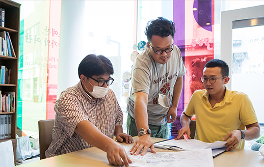
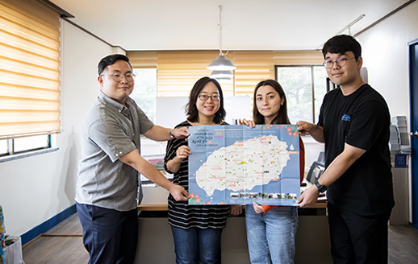
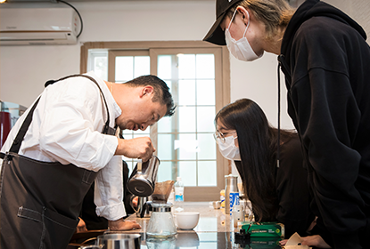
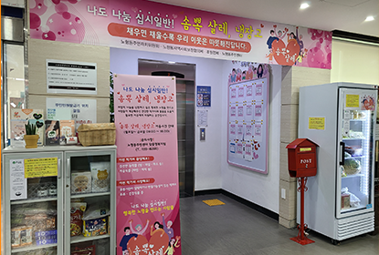
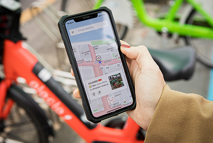
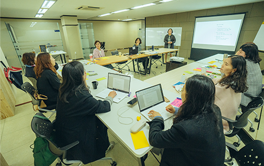
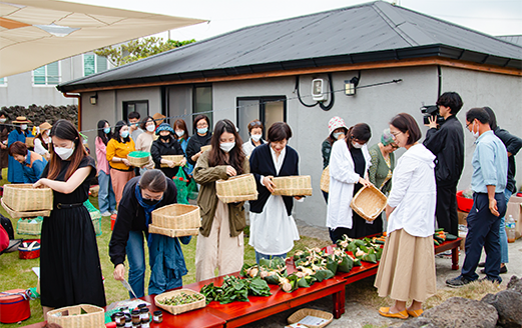

센터소개
생활실험 프로젝트(리빙랩)
일상생활에서 나타나는 이슈와 문제를 지역주민, 공동체, 전문가들이
다양한 관점으로 새롭게 바라보고 더 나아가 문제를 해결해 보고자 하는 시도와 실험을 지원합니다.
- 공모사업
-
 
- 제주생활탐구
-
제주의 삶 속에서 마주쳤던 일상 속 문제를 발견하고, 다양한 자료를 조사 및 분석하여 문제를 새롭게 정의하는 활동 지원
- 대상 : 문제를 인식하고 새롭게 정의하고자 하는 개인, 소모임, 단체, 법인 등
- 선정방식 : 사업기간 내 정기적으로 공고 및 모집•선정(2021년 상•하반기 총 2회 진행 예정)
- 제주생활실험
-
문제와 해결방안에 대해 제시한 가설을 토대로 시범 프로젝트를 운영하고 직접 확인해보는 활동 지원
- 대상 : 문제에 대한 가설을 세우고 적용 가능한 해결책을 모색하고자 하는 주민, 단체 등
- 선정방식 : 사업기간 내 공고 및 모집•선정(2021년 연 1회 진행 예정)
- 공모사업 추진절차
-
진행과정
- 참여자 모집 1차 서면심사, 2차 대면심사를 통해 최종 선정
- 오리엔테이션 개최 활동추진 관련 사업일정 안내 및 활동계획•예산 내용 확정
- 활동진행 활동 중간보고서 접수 및 선정팀 필요에 따른 인적•물적자원 연계
- 교육프로그램 및 활동 모니터링 활동에 필요한 교육프로그램 지원 및 현장방문 모니터링 진행
- 활동종료 및 결과보고/공유 활동과정과 결과물 등 최종보고서 제출/유의미한 정보 공유
- 혁신활동 교류 및 네트워킹 참여자들의 추진 활동 내용을 공유하고 참여자들 간 교류 기회 마련
- 해결 시도형 리빙랩 사업
-
지역 주민들이 공감할 수 있는 문제를 해결하기 위해 유관기관 및 전문 단체, 이해관계자들과 협력하여 시범 프로젝트 진행
(*2020년 사업 내용)
 가정 밖 청소년•청년 자립지원 지역 내 가정 밖 청소년•청년들의 열악한 진로환경을 개선하고 지역사회의 지속적인 맞춤형 지원방안 모색  건강한 먹거리 기반 커뮤니티 돌봄 취약계층의 먹거리 불안 해소를 위해 지역주민들이 자발적으로 건강한 식재료를 나누고 이웃들이 서로 돌보는 ‘공동체 돌봄 모델’ 구상  공유이동수단을 활용한 대안이동 실험 공유 대안이동수단(공유 전기자전거 등) 시스템을 운영 하고 이를 통해 이용자들의 이동 데이터를 수집•분석하여 장기적으로 차량 의존도를 줄이면서 생활할 수 있도록 다양한 실험 시도
- 제주로 만난 사이 종료사업
-
지속가능한 제주를 위한 지역의 주요 아젠다를 설정하고 지역문제에 관심있는 주체를 발굴하여 실험활동을 통한 주민참여 활동 지원
- 공모사업
-
제주의 삶과 이슈에 관한 공통 관심사를 이야기하고 문제 해결을 모색해보는 커뮤니티 모임 활동 지원
- 기획사업
-
4개 주요이슈(쓰레기자원, 입말음식, 놀이, 경력쉼) 전문 매개자가 직접 지역 주체 발굴, 활동을 기획•운영하고 문제 해결 방안 제시
 